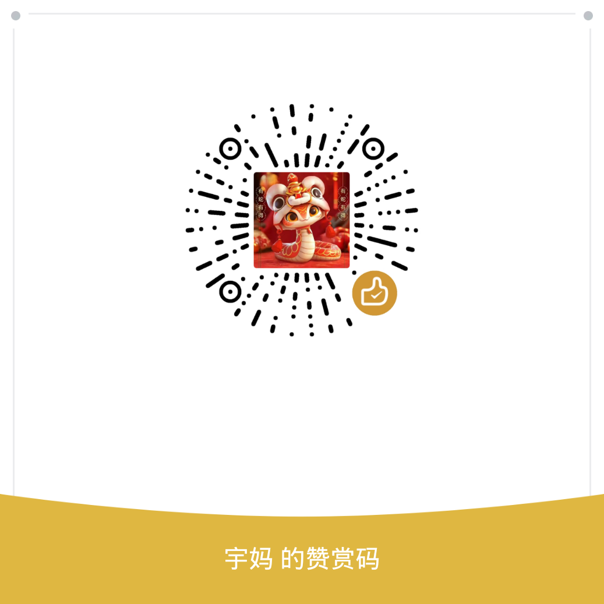

本页面用于查看当前位置与定位精度。
定位精度标识
蓝色十字：精度 10 米以内，定位可靠。
红色十字：精度 10 至 50 米，基本可用。
红色快闪圆：精度 50 至 100 米，GNSS 信号不良，圆半径等于误差范围。
深灰圆：精度 100 米以上，可能为基站定位，结果不可靠。
地图缩小时，圆会变成同色大头针，尺寸不随缩放变化。
轨迹记录
点击开始定位后，可点击开始记录。正常模式每 10 秒打一个点，省电模式每 30 秒打一个点。精度过大的点会被跳过，恢复后与下一个点直线连接。
导出图片
记录结束后，点击导出图片，地图会自动调整到轨迹范围并加载底图。随后请使用系统截图功能保存画面。
调试模式
长按底部调试按钮，可手动预览各种定位状态，便于测试。
赞赏
如果这个页面对你有帮助，欢迎用微信扫一扫赞赏。
